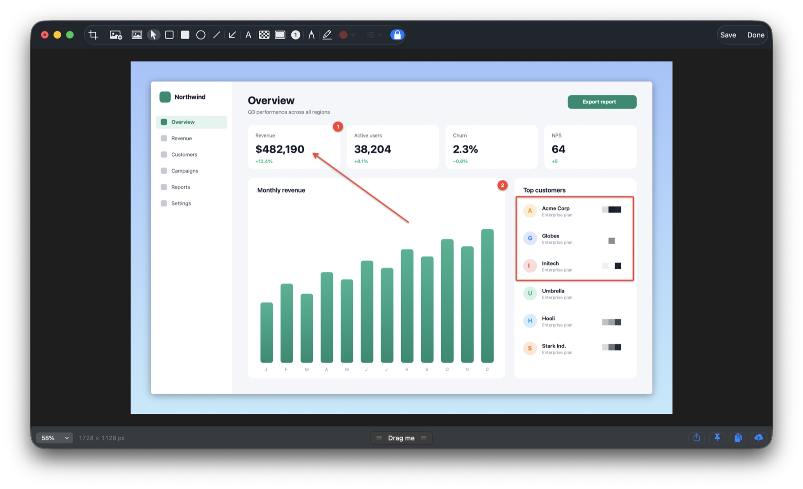
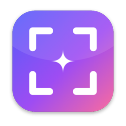
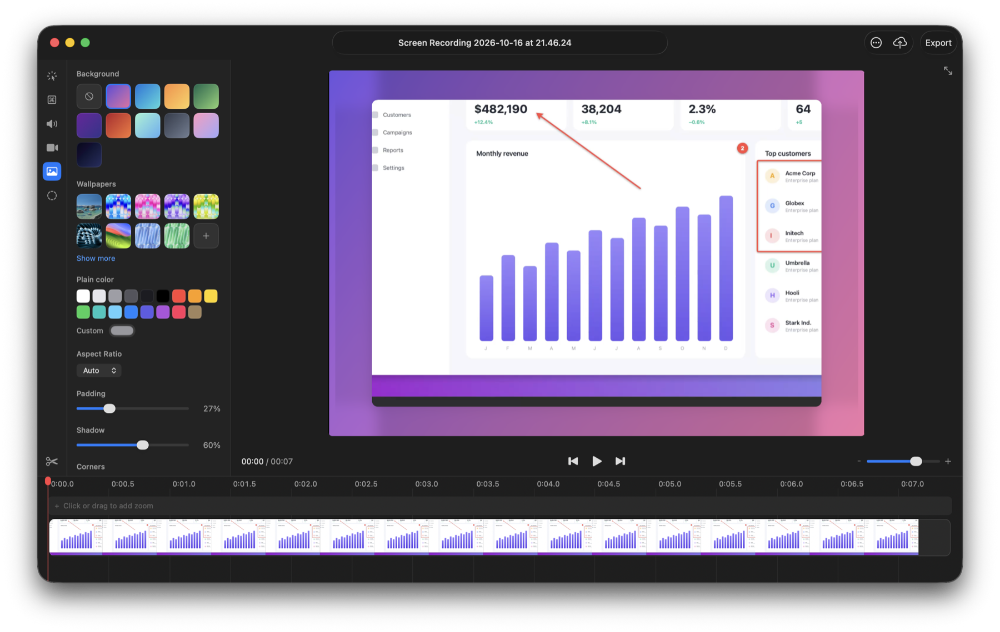

Annotate in seconds
Arrows, shapes, text, counters, highlighter, blur and pixelate, spotlight — plus a background tool with gradients, padding and shadows for share-ready images.

Free · Open source · MIT
Capture anything, annotate in seconds, record your screen, pull text out of images and share it — from a tiny app in your menu bar. Everything happens on your Mac.
curl -fsSL https://udsy19.github.io/CleanShotX/install.sh | bash
macOS 14 Sonoma or later · Apple silicon & Intel · ~8 MB

Everything in one place

Arrows, shapes, text, counters, highlighter, blur and pixelate, spotlight — plus a background tool with gradients, padding and shadows for share-ready images.

Area, window, fullscreen, previous area, self-timer and All-In-One — with a magnifier, window snapping and frozen-screen mode.

Every capture lands in a floating thumbnail: copy, save, annotate, pin, upload — or just drag it into any app.

Microphone, system audio, camera bubble, click highlights and keystrokes. Trim and export in the built-in editor.

Polished product demos without editing skills: automatic zoom on clicks, a smooth cursor, backgrounds, padding and rounded corners, on a real timeline.
Copy any text on screen — even from images and videos — with on-device OCR and QR detection.
Grab entire pages and long chats; frames are stitched pixel-perfectly, vertically or horizontally.
Keep references floating above everything, resize them, fade them, or make them click-through.
Every recent capture, one shortcut away. Restore anything you closed too early.
A global shortcut for every action, and a shotcraft:// URL scheme for Raycast, Alfred and Shortcuts.
Upload to your own S3-compatible bucket, HTTP endpoint or synced folder — the link is copied instantly.
Private by design
Shotcraft is a local app. Screenshots, recordings, annotations and text recognition all run on-device — no accounts, no analytics, no servers. Files only leave your Mac when you upload them to a destination you configured.
Read the privacy note →Get started
Paste into Terminal. It downloads the latest release, puts Shotcraft in Applications and opens it.
curl -fsSL https://udsy19.github.io/CleanShotX/install.sh | bash
The welcome guide walks you through the one permission macOS requires to capture your screen.
Drag over anything. Or pick your own shortcuts — even macOS's ⇧⌘3/4/5 — during setup.
Prefer a disk image? Download the DMG, drag Shotcraft to Applications, and on first launch choose System Settings → Privacy & Security → Open Anyway.
Yes. It's open source under the MIT license — no subscription, no trial, no account.
Shotcraft is an independent app that isn't notarized by Apple, so the first launch of a browser-downloaded copy needs System Settings → Privacy & Security → Open Anyway. That's needed only once — and the one-line installer avoids it entirely.
Never by default. Uploading only happens when you configure your own destination in Settings → Upload and choose to upload a capture.
Run the install command again to update. To uninstall:
curl -fsSL https://udsy19.github.io/CleanShotX/install.sh | bash -s -- --uninstall
Shotcraft is an independent, from-scratch open-source project inspired by CleanShot X's workflow. It isn't affiliated with or endorsed by CleanShot X or MTW, and shares none of its code or assets.